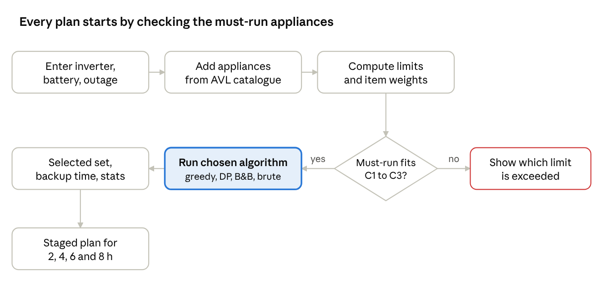
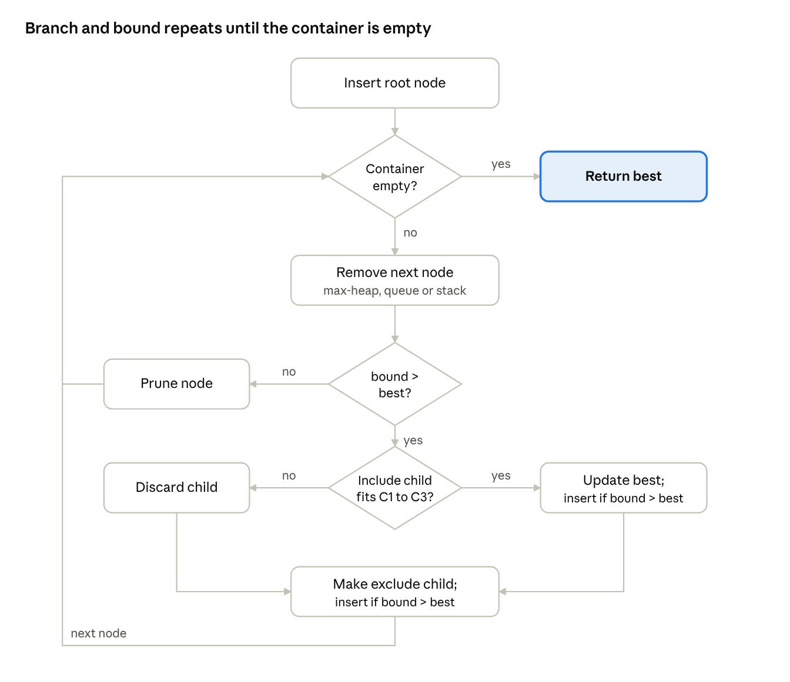
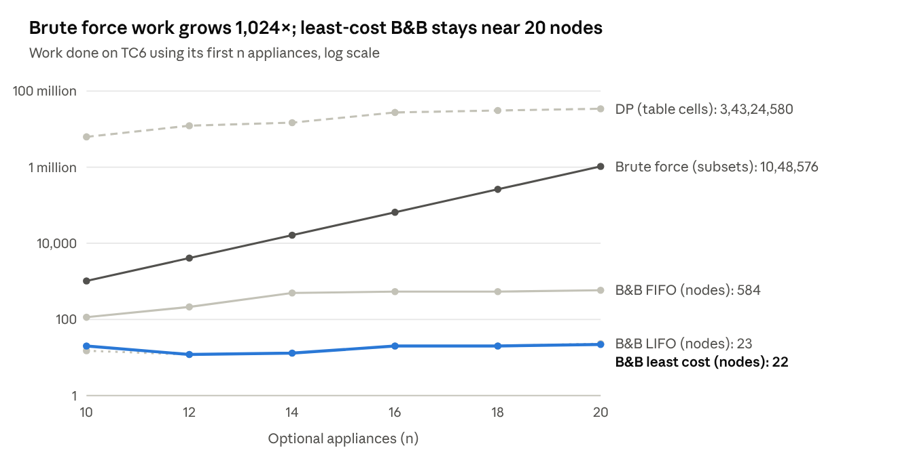
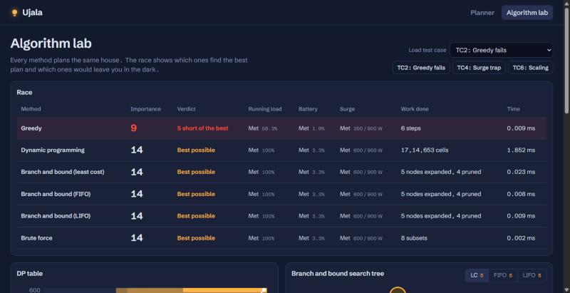
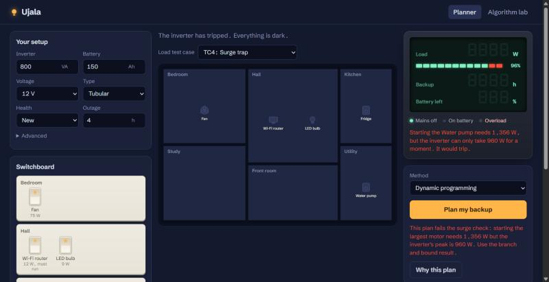

Project title: Ujala: a power cut planner that decides which appliances to keep on during an outage, using greedy, dynamic programming and branch and bound.
Project guide: Prof. ____________________
| Name | Roll no. | Department | Year |
|---|---|---|---|
| Om Bhirud | 12 | Computer | Third Year (TY) |
During a power cut, a household on an inverter has to guess which appliances to switch on, and two things go wrong. Overload: too many appliances, or a motor (fridge compressor, water pump) starting up, exceed the inverter's capacity and it trips. Early drain: the battery runs out before power returns because energy went to low-priority appliances.
The problem is to choose the most valuable set of appliances that fits the inverter's running-load limit, its momentary surge limit and the battery's usable energy, while keeping every must-run appliance on.
Objectives:
Ujala ("light") is a planner, not a controller: every input comes from labels (inverter VA, battery Ah and voltage, appliance watts), and the household switches appliances by hand following the plan. Three capacities come from the labels:
maxW = VA × PF · peakW = maxW × surgeTolerance · usableWh = Ah × V × DoD × health × efficiency
An 800 VA inverter with PF 0.8 gives 640 W running and 960 W peak. A 150 Ah, 12 V tubular battery (DoD 0.7, efficiency 0.85) gives about 1,071 Wh usable, not the 1,800 Wh the label suggests.
Each appliance unit i has watts wi, importance vi (1–10), energy ei = wi × min(hours needed, T) × duty cycle, and surge extra xi = (surge factor − 1) × wi. A fridge compressor runs about 40% of the time (duty 0.4); a pump may need only 0.5 h. Because energy depends on hours and duty cycle, watts and energy are different weights, which makes this a genuine two-constraint 0/1 knapsack. Choose a set S to maximise Σ vi subject to:
| Constraint | Condition |
|---|---|
| C1 Running load | Σ wi ≤ maxW |
| C2 Battery | Σ ei ≤ usableWh |
| C3 Surge | Σ wi + max xi ≤ peakW (motors started one at a time) |
| C4 Must-run | every must-run appliance is in S |
If the must-run appliances alone break C1, C2 or C3, the planner returns an error naming that limit. The output is the selected set, load and energy used, the surge check, estimated backup time (usableWh ÷ Σ wi × duty) and algorithm statistics.
All structures and algorithms are hand-written in backend/src/; built-in sort, Map and Set are not used for these jobs.
| Concept | Job in Ujala | Time complexity |
|---|---|---|
| Greedy (importance per watt) | Fast baseline plan | O(n log n) |
| Max-heap + heap sort | Orders items for greedy and B&B; priority queue for least-cost B&B | O(n log n) |
| 0/1 knapsack DP, two constraints | Exact optimum over C1 + C2 | O(n · W · E), pseudo-polynomial |
| Branch and bound (LC, FIFO, LIFO) | Exact optimum over C1 + C2 + C3 | O(2n) worst case |
| Queue (circular buffer) | FIFO branch and bound (breadth first) | O(1) enqueue / dequeue |
| Stack | LIFO branch and bound (depth first) | O(1) push / pop |
| Brute force (bitmask) | Ground truth for tests; shows 2n growth | O(2n · n) |
| AVL tree | Appliance catalogue (50 items), prefix search while typing | O(log n) search / insert |
Greedy
GREEDY(items):
S ← must-run items (error if they break C1–C3)
sort remaining by v/w descending (heap sort)
for each item in that order:
if adding it keeps C1, C2, C3 true: add to S
return S
Brute force loops a bitmask from 0 to 2n − 1 and keeps the best subset satisfying C1–C4 (n ≤ 20).
Branch and bound (one function, three containers)
BRANCH_AND_BOUND(items, strategy):
container = max-heap on bound (LC) | queue (FIFO)
| stack (LIFO)
best ← must-run set; insert root
while container not empty:
node ← remove next
if node.bound ≤ best.value: prune; continue
include child: if C1, C2, C3 hold → update best;
insert if bound > best
exclude child: insert if bound > best
return best (cap: 200,000 expanded nodes)
Two-constraint 0/1 knapsack DP. Watts and energy are rounded up to whole steps (1 W and 1 Wh) so every DP answer is truly feasible. With coarser 10 W / 25 Wh steps, TC1 lost the optimum (40 instead of 43), so steps double only if the table would not fit in memory.
DP(items, W, E):
dp[0..W][0..E] ← 0; keep[1..n][0..W][0..E] ← false
for i ← 1 to n:
for w ← W down to wᵢ: (downward, so each item is used once)
for e ← E down to eᵢ:
if dp[w−wᵢ][e−eᵢ] + vᵢ > dp[w][e]: dp[w][e] ← dp[w−wᵢ][e−eᵢ] + vᵢ; keep[i][w][e] ← true
w ← W; e ← E
for i ← n down to 1: if keep[i][w][e]: take item i; w ← w − wᵢ; e ← e − eᵢ (reconstruct)
check C3 on the result; if it fails, flag "use the B&B result"
B&B upper bound. Items are pre-sorted by v/w. A node holds level, value, load, energy and the largest surge extra so far. Its bound is the smaller of two fractional-knapsack relaxations of the undecided items: one fills the remaining watts by v/w, the other the remaining energy by v/e. Each drops one constraint, so each is a valid bound and the smaller is tighter.


Backend: Node.js 22 + Express (ES modules), no database; the catalogue loads from JSON into the AVL tree at startup. Frontend: React 18 + Vite, React Router, Zustand, GSAP for the landing scroll, hand-drawn SVG for the house, charts and trees, and the open-licensed DSEG7 font for the inverter display.
ujala/backend/src/ model.js formulas, validation, C1–C4 checks planner.js runs and times each algorithm server.js REST API on port 4000 tests/run-tests.js 22 automated checks ds/ MaxHeap.js Queue.js Stack.js AVLTree.js BST.js algorithms/ greedy.js knapsackDP.js branchAndBound.js bruteForce.js stagedPlan.js ujala/backend/data/ catalogue.json (50 appliances), testcases.json (TC1–TC6) ujala/frontend/src/ pages: Landing, Planner, Lab; components: House, Switchboard, InverterPanel
API (base http://localhost:4000/api): GET /catalogue?prefix= (AVL prefix search), GET /catalogue/heights, GET /testcases, POST /plan, POST /compare, POST /staged, POST /bb-tree. Errors return HTTP 400 with a message naming the broken limit.
DP inner loop (knapsackDP.js)
for (let w = W; w >= wi; w--) {
for (let e = E; e >= ei; e--) {
const take = dp[(w - wi) * cols + (e - ei)] + vi;
if (take > dp[w * cols + e]) {
dp[w * cols + e] = take;
keep[i * cells + w * cols + e] = 1;
}
}
}
B&B bound, watts relaxation (branchAndBound.js)
let room = caps.maxW - node.load, byWatts = node.value;
for (let i = node.level; i < n && room > EPS; i++) {
const it = sorted[i];
if (it.watts <= room) { room -= it.watts;
byWatts += it.importance; }
else { byWatts += (it.importance * room) / it.watts;
room = 0; }
}
return Math.floor(Math.min(byWatts, byWh) + EPS);
Testing: npm test runs 22 checks: unit tests for every data structure, and for each test case it computes the optimum by brute force and asserts that DP and all three B&B strategies match it. All 22 pass.
Sample input (TC1, normal evening): 800 VA inverter, 150 Ah 12 V tubular battery, 4 h outage. Fridge 150 W (duty 0.4, surge ×3, importance 9); Wi-Fi router 12 W (must-run, 10); three fans 75 W (8, 6, 5); four LED bulbs 9 W (7, 6, 4, 3); TV 80 W (4); laptop charger 65 W (6).
Output (least-cost B&B): keep the router, all four bulbs, the bedroom fan, the laptop charger and the fridge. Total importance 53; load 338 of 640 W; energy 992 of 1,071 Wh; backup about 4.3 h. Left out: hall fan, study fan and TV, each because it would exceed the battery.
| Case | What it tests | Greedy | DP | B&B (LC / FIFO / LIFO) | Brute force |
|---|---|---|---|---|---|
| TC1 | Normal evening, battery binds | 50 | 53 | 53 / 53 / 53 | 53 |
| TC2 | Greedy fails (600 W limit; floodlights 350 W vs two PCs 300 W) | 9 | 14 | 14 / 14 / 14 | 14 |
| TC3 | TC1 over 8 h, battery at 60% health | 30 | 30 | 30 / 30 / 30 | 30 |
| TC4 | Surge trap (fridge + 370 W pump, surge ×3) | 30 | 38, fails C3 | 30 / 30 / 30 | 30 |
| TC5 | Must-run items need 700 W on a 640 W inverter | error | error | error | error |
| TC6 | Scaling, 20 optional appliances | 67 | 68 | 68 / 68 / 68 | 68 |



Ujala turns a household's power cut into a two-constraint 0/1 knapsack with an extra surge limit, and solves it exactly. Greedy is fast but misses the optimum on 0/1 choices (TC2); dynamic programming is exact for load and battery in pseudo-polynomial time but cannot express the surge maximum (TC4); branch and bound handles all three limits, and least-cost search with a max-heap expands far fewer nodes than FIFO (22 against 584 on TC6), while brute force grows as 2n.
Applications: homes with regular outages; homes where medical devices or a work router must stay on; small shops and clinics running lights, fans and card machines on backup; sizing solar battery systems and small-office UPS units.
Future scope: reading live load from smart plugs or smart inverters to switch appliances automatically; solar charging during the outage; a mobile app.
Acknowledgement of tools: Node.js, Express, React, Vite, React Router, Zustand, GSAP, Schibsted Grotesk and DSEG7 fonts (open licence). An AI coding assistant (Claude) was used to help write code and this report; the code has been reviewed and can be explained.